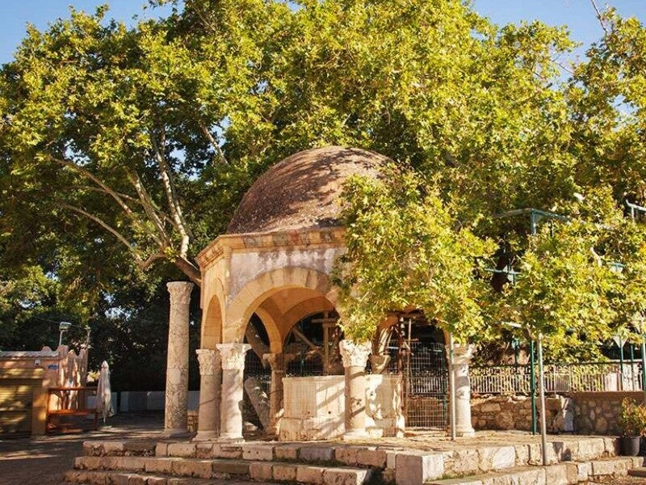

Boom van Hippocrates
De legendarische plataan waaronder Hippocrates volgens de overlevering lesgaf – vader van de moderne geneeskunde.
De legende
Volgens de legende gaf Hippocrates onder deze boom les aan zijn studenten. Hij wordt gezien als de vader van de moderne geneeskunde: de eerste arts in de westerse wereld die een diagnose stelde op basis van lichamelijke kenmerken, in plaats van bovennatuurlijke oorzaken.
Hij schreef therapieën voor en ontwierp een artseneed die nog steeds door artsen wordt afgelegd.
Niet 2400 jaar oud
De boom die je nu ziet is niet dezelfde als in de tijd van Hippocrates – die zou meer dan 2400 jaar oud zijn. Deze plataan is ongeveer 500 jaar oud, waarschijnlijk een nazaat van de oorspronkelijke boom.
Zaden en delen van de boom zijn over de hele wereld verspreid; diverse medische universiteiten claimen een stuk van de “Hippocrates-boom” te hebben.

Stellage sinds 1975
Door ouderdom, insecten en schimmels is de stam uitgehold. Sinds 1975 worden de takken ondersteund door een ijzeren stellage, zodat ze niet bezwijken onder hun eigen gewicht.
Dit maakt de boom een van de grootste en oudste platanen in Europa. De omtrek van de stam is circa 12 meter, de diameter ongeveer 4 meter, de kroon zo’n 18 meter.
 Op het plein
Op het plein
 De kroon
De kroon
Bezoeken
Gratis, altijd toegankelijk – op het Hippocratesplein in Kos-stad, dicht bij de haven en de Agora.